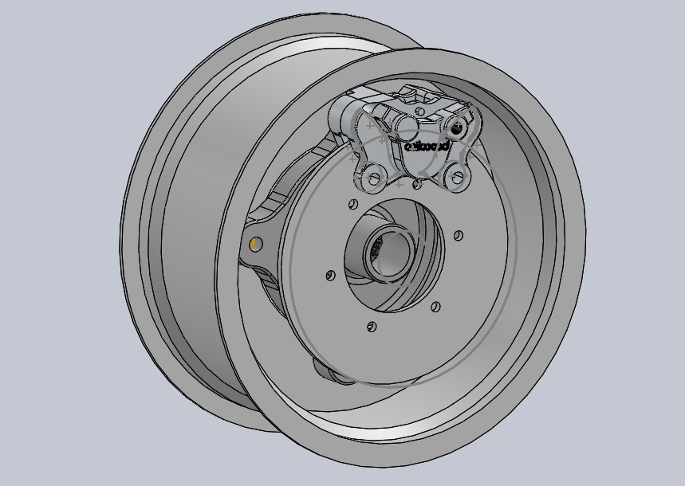

Overview
Baja SAE is a collegiate engineering competition where student teams design, build, and test an off-road vehicle. As Braking System Lead for York University's Baja SAE team, I am responsible for developing the vehicle's braking subsystem, focusing on hydraulic component selection, system configuration, and braking performance.
Objective
Develop a reliable hydraulic braking system capable of meeting competition requirements while providing sufficient stopping force under demanding off-road conditions.
My Contributions
- Lead the development and design of the braking subsystem.
- Research and evaluate hydraulic braking components, including master cylinders and calipers.
- Compare component specifications to determine compatibility with the vehicle's existing geometry.
- Investigate pedal ratio, hydraulic pressure, and brake force distribution.
- Evaluate braking requirements against competition regulations.
Photos & renders

Design Process
The braking system requires careful consideration of how driver input is translated into braking force at the wheels.
- Hydraulic system: Master cylinder sizing, hydraulic pressure, and caliper compatibility.
- Pedal mechanics: Pedal ratio and driver input force.
- Brake bias: Distribution of braking force between the front and rear wheels.
- Weight transfer: Changes in normal force during braking and their effect on tire traction.
- Packaging: Available space within the wheel assembly and chassis.
Current Progress
The subsystem is under development, with work focused on component selection, design evaluation, and system calculations. Upcoming steps include finalizing the configuration and progressing toward integration and testing.
Takeaways
Understanding interconnected systems
I learned how different components within a hydraulic braking system work together to produce the desired braking performance. Component selection cannot be considered individually, as changes to one part of the system can influence the performance and compatibility of others.
Engineering beyond theoretical calculations
This project helped me understand how theoretical concepts such as hydraulic pressure, pedal ratio, and weight transfer translate into practical design decisions. It reinforced the importance of considering real-world constraints alongside calculations.
Balancing performance and practicality
I learned that selecting components involves more than choosing the highest-performing option. Factors such as packaging, compatibility, reliability, and competition requirements all influence the final design.